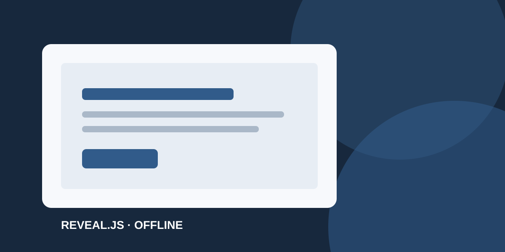

PRÄSENTATIONSBIBLIOTHEK · DEMO
Eine lokale reveal.js-Präsentation ohne CDN und ohne externe Laufzeitdienste.
Auch Grafiken werden relativ aus dem Präsentationsordner geladen:

def main():
print("Hallo, Offline-Welt!")
if __name__ == "__main__":
main()
Mit den Pfeiltasten, den Navigationssymbolen oder durch Wischen auf Touchscreens wechseln.
Taste S öffnet – sofern vom Browser zugelassen – die Sprecheransicht.
Ersetze diese Folien durch deine Inhalte oder lege eine neue Präsentation mit dem Python-Hilfsskript an.